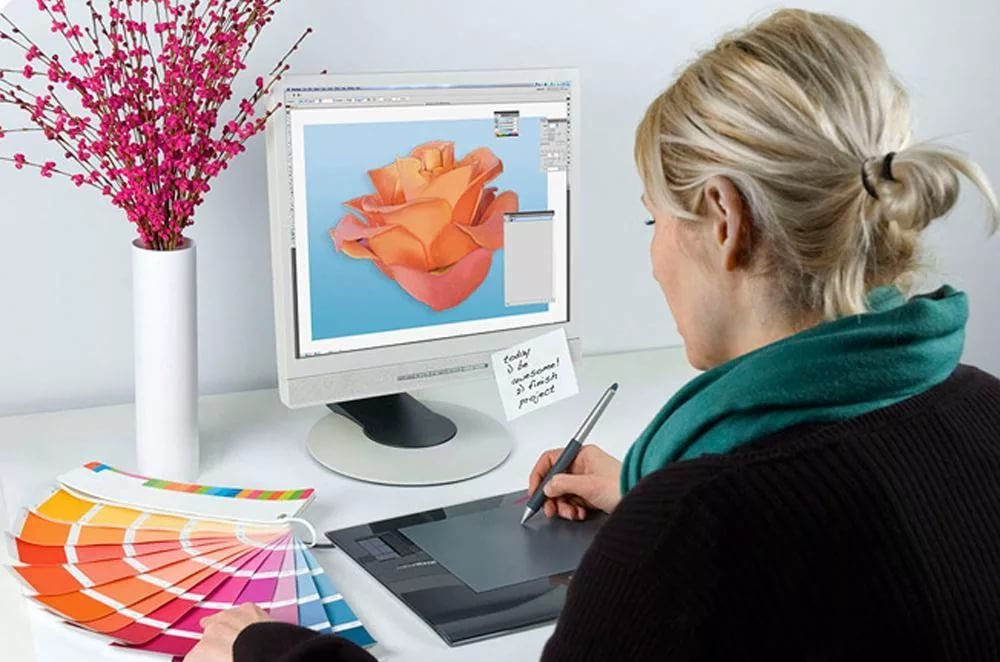

Компьютерный дизайн
Компьютерный дизайн
Под компьютерным дизайном понимается художественная и проектная работа по реализации гармоничной и удобной визуальной и коммуникативной сферы. Компьютерный дизайн привносит различные инновации в прогресс социальной, экономической и культурной области жизнедеятельности человека, что способствует формированию видимого рисунка современного образа жизни.
Сегодняшний компьютерный дизайн даёт возможность выполнять дизайнерское проектирование на более высоком уровне. Нарисовать чертёж, пространственную модель, отличное изображение, схемную реализацию, выполнить математические расчёты, всё это возможно осуществить при помощи компьютерной программы.
Композиция считается самым важным моментом компьютерного дизайна, особенно, когда применяются предварительные материалы или другие компоненты.
Это могут быть:
- наборы книжных макетов и иллюстраций;
- наборы рекламных и плакатов с информацией;
- графические изображения почтовых марок и открыток;
- логотипы, как основные элементы компании, и образцы корпоративного стиля;
- образцы рекламной полиграфической продукции;
- образцы сувенирной продукции;
- оформление интернет-сайтов.
Графический дизайн делится на следующие виды:
- выполнение компьютерного дизайна мира предметов;
- выполнение компьютерного дизайна в виртуальной сфере.
Для того чтобы стать востребованным специалистом в данных областях потребуется знание, как минимум двух программ для обработки самых различных изображений. Для работы с компьютерной графикой используют специальное программное обеспечение, его еще называют - графическими редакторами.
Сегодня насчитывается множество самых разных графических редакторов, с помощью которых специалисты по компьютерному дизайну с легкостью смогут воплотить самые интересные и креативные идеи и показать их всему миру. Многообразие редакторов помогает дизайнерам в самых различных областях, пользоваться тем набором инструментов, которые подходят непосредственно для работы с конкретной графикой.
Говоря о компьютерной графике её можно разделить на два вида. Это векторная и растровая графика.
Компьютерный дизайн - векторная графика
Векторное изображение - состоит из прямых и кривых линий. Из простейших фигур складываются более сложные, как картинка-аппликация. На сегодняшний день одной из лучших программ по обработке векторных изображений является Corel DRAW. Программа предназначена для подготовки макетов, визиток, журналов, рекламных буклетов, цветных плакатов, брошюр и обложек книг. В редакторе Corel DRAW дизайнеры работают с простыми отрезками и геометрическими фигурами. У каждой фигуры может быть свой определенный цвет, свои линии и контуры. Самые простые кривые отрезки называются кривые Безье (в шестидесятых Безье впервые применил их в дизайне). Пройдя курсы - Corel DRAW-рекламный дизайн, и освоив простейшие базовые элементы, для создания векторного изображения, такие как эллипс, квадрат, отрезок, окружность. Легко можно создавать более сложные и интересные объекты, которые в дальнейшем можно применить для воплощения дизайнерских идей.
Компьютерный дизайн - растровая графика
Растровое изображение - состоит из маленьких точек, и у каждой точки свой конкретный цвет. Эти точки ещё называют пикселями. Пиксели - это элемент, из которого состоит растровое изображение. Исключительно благодаря маленькому размеру пикселей создается впечатление одного цельного изображения. Иногда растровое изображение сравнивают с вышивкой или мозаикой, где каждый элемент (в данном случае пиксель) является частью общего. Соответственно для того чтобы получить качественную и реалистичную картинку необходимо больше цветовых оттенков и пикселей. Для работы с растровыми изображениями дизайнеры по всему миру используют растровый редактор Adobe Photoshop. Основной работой в Adobe Photoshop является редактирование фотографий (photoshop переводится как "фотомастерская") Владея основными инструментами в Photoshop можно ретушировать фотографии, производить фотомонтаж, настраивать цветовой баланс фотографии, контраст и яркость. Рисовать красочные и реалистичные рисунки используя огромное количество установленных кистей.
Освоив всего две программы Corel DRAW и Adobe Photoshop можно не только заниматься творчеством для души, но и заработать на этом деньги. Сегодня большими темпами развивается рекламный бизнес и информационные технологии. В связи с этим появляются новые профессии, одной их таких является профессия Web-дизайнер. Практически ни один сайт и интернет-магазин, не представляется без качественной и красивой графики. Поэтому для разработки дизайна сайтов, так необходимы Web-дизайнеры.


© Архипова Карина
г. Копейск, 2020 г.